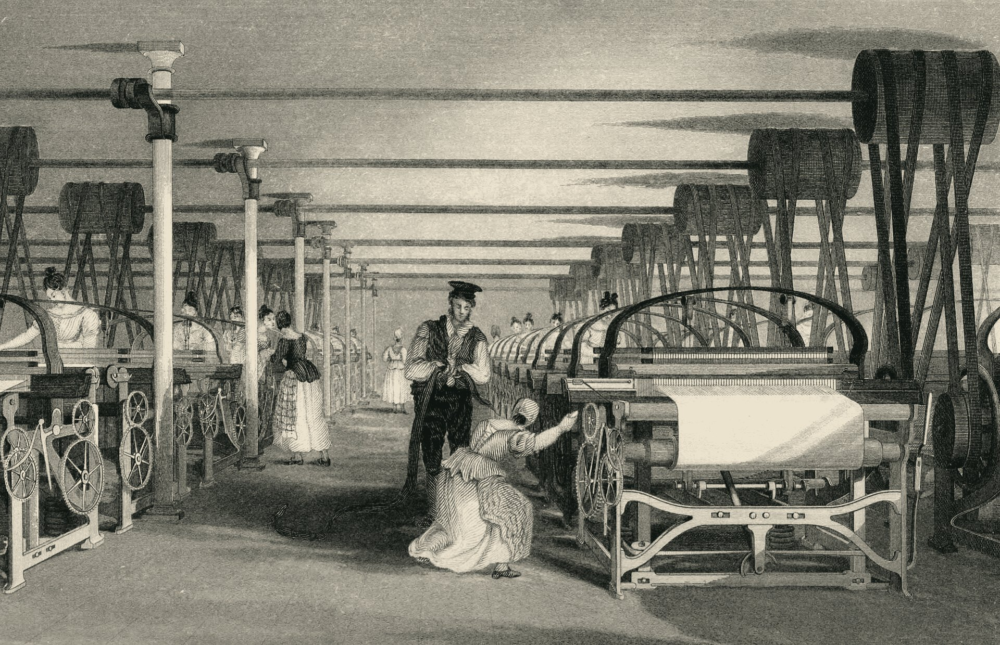
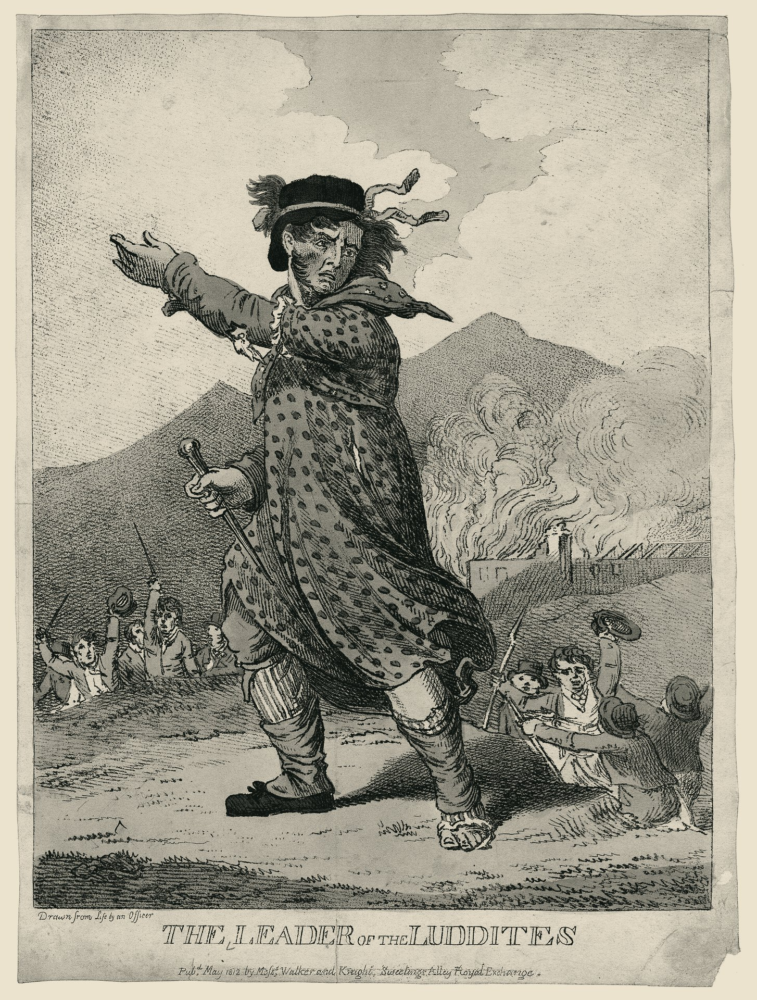
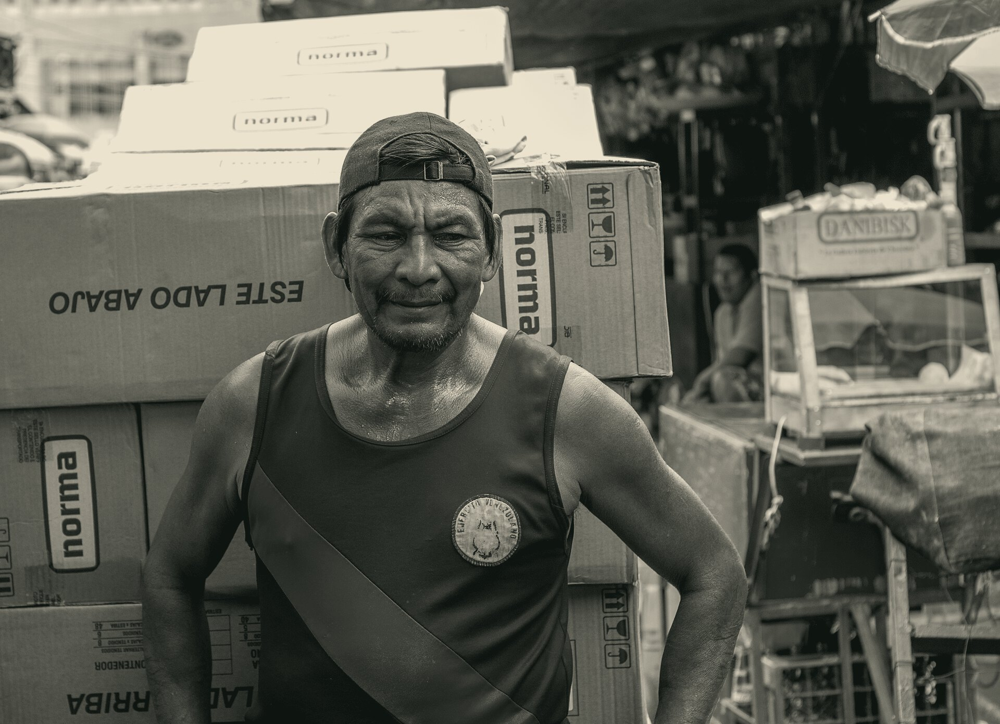

Los empleos no desaparecen: se descomponen y se rediseñan.
«La IA va a reemplazar a Recursos Humanos.»
Es lo que más se escucha en los pasillos. Vamos a revisarlo con historia, con datos y con lo que ya está pasando en empresas que conocen.
Levanten la mano si su cargo actual no existía cuando empezaron a trabajar.
de los trabajadores de EE. UU. en 2018 tenía una ocupación que no existía en 1940.Autor, Chin, Salomons y Seegmiller, Quarterly Journal of Economics, 2024
«Nada se pierde,nada se crea,todo se transforma.»
Lo que vale para la materia vale para el trabajo.
La siembra
Hace unos 12.000 años empezamos a cultivar. Aquí mismo, en la cuenca Paraná–Paraguay, los guaraní sembraban maíz y mandioca mientras seguían cazando.
El cazador no desapareció: su saber pasó a la siembra.
La imprenta
Un copista podía pasar meses en un solo libro. Con los tipos móviles de Gutenberg, la Biblia de 1455 salió en unos 180 ejemplares.
El saber del copista —la letra y el texto— no se perdió: se ramificó.
de libros impresos entre 1454 y 1500: más que todos los manuscritos copiados en Europa occidental en los mil años anteriores (10,9 millones).
Buringh y van Zanden, Journal of Economic History, 2009
El telar mecánico
En el siglo XIX se automatizó casi todo el trabajo de tejer. Y pasó algo contraintuitivo:
del trabajo de tejer una yarda de tela se automatizó… y los empleos de tejedor en fábricas crecieron: la ropa se abarató y la demanda se multiplicó.
James Bessen, «Toil and Technology», FMI, 2015

Los ludditas tenían razón… a corto plazo
1811–1816: artesanos textiles rompen máquinas. Inglaterra moviliza 12.000 soldados y castiga con la muerte romper una máquina. A la larga, el empleo textil creció. Pero el corto plazo fue muy largo.
Robert C. Allen (2009), con datos de Crafts-Harley y Feinstein
Lo que hoy sí es diferente
automatización
de las habilidades clave cambiará para 2030 (WEF, Future of Jobs 2025).
El cargo no desaparece: se descompone en tareas
Lo que ya pasó en empresas que conocen
Con los cajeros automáticos, abrir sucursales se abarató. Hubo más sucursales y el cajero pasó de contar billetes a asesorar.
James Bessen, EE. UU., 1970–2010
de RRHH pasaron a agentes de IA (AskHR). Según su CEO, ese ahorro se reinvirtió en contratar programadores y vendedores.
Arvind Krishna, mayo de 2025
En 2024 su IA hacía «el trabajo de 700 agentes». En 2025 anunció que volvería a contratar personas porque la calidad cayó.
Klarna, 2024–2025
Lo que la IA no puede hacer, todavía
No lee emociones
Un gesto no revela una emoción de forma confiable: una sonrisa puede ser sumisión. Por eso la UE prohíbe el reconocimiento de emociones en el trabajo.
Barrett et al., 2019; EU AI Act
No tiene tu conocimiento tácito
«Sabemos más de lo que podemos decir.» La cultura, los códigos y la idiosincrasia de un equipo no están en ningún dataset.
Polanyi, 1966; Autor, 2014
No decide sin sesgos
Con CV idénticos, 22 modelos líderes prefirieron a la candidata con nombre de mujer (57%) y al primero de la lista (64%).
Rozado, 2025
No tiene conciencia
Ningún sistema actual es consciente: no vive las consecuencias de lo que decide.
Butlin, Bengio et al., 2023; LeCun, 2022
No puede responder moralmente
Cuando una máquina decide sola, se abre una brecha: nadie responde. La firma tiene que ser de una persona.
Matthias, 2004
Eso es, justamente, el trabajo de Recursos Humanos.

El trabajador de 52 años, con 20 en el mismo puesto, no se consuela con que en 30 años habrá industrias nuevas. Su pausa de Engels es su vida.
Mantener relevantes a sus colaboradores en la medida de lo posible: formar antes de que sea urgente y moverlos hacia las tareas que crecen.
Su interés en mantenerse actualizada es propio. Nadie puede aprender por otro.
Entonces, ¿nos va a reemplazar?
Cinco lecciones que la historia ya pagó
Nada se pierde, todo se transforma. En el trabajo tampoco se pierde lo esencial: la posibilidad de trabajar, la experiencia y el saber.
La pausa de Engels duró más de medio siglo.
Cuánto dure la nuestra depende de lo que hagamos desde Recursos Humanos.